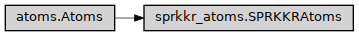

SPRKKRAtoms
- class ase2sprkkr.sprkkr.sprkkr_atoms.SPRKKRAtoms(*args, symmetry=True, potential=None, **kwargs)[source]
ASE Atoms object extended by the data necessary for SPR-KKR calculations
Class hierarchy
Constructor
- __init__(*args, symmetry=True, potential=None, **kwargs)[source]
Creates SPRKKRAtoms atoms
- Parameters
*args (list) – The positionals arguments of ase.Atoms.__init__
symmetry (bool) – The symmetry will be computed when the sites property will be initialized. I.e., the by-symmetry-equal atomic sites will share the same sites object.
**kwargs (dict) – The named arguments of ase.Atoms.__init__
- sites_array_name = 'sprkkr_sites_data'
- static promote_ase_atoms(obj, symmetry=None)[source]
Convert ASE Atoms object to the one usable by SPRKKR. For the case of the usability it is a bit ugly hack: The __class__ attribute is replaced so the extra methods and properties of the objects will be available.
- Parameters
obj (ase.Atoms) – The atoms object to be promoted to be used for SPRKKR calculations
symmetry (bool or None) – The sites property of the resulting object will consider the symmetry of the structure. I.e., the by-symmetry-equal atomic sites will share the same sites object. Default None is the same as True, however it does not change the symmetry of the already promoted obj passed into the routine.
- _init(symmetry=True, potential=None)[source]
The initialization of the additional (not-in-ASE) properties. To be used by constructor and by promote_ase_atoms
- property regions
- property symmetry
Whether the sites property is/will be generated using symmetry, i.e. whether the Sites objects in the sites property will be shared among symmetric atomic sites.
- compute_sites_symmetry(consider_old=False, symmetry_precision=1e-05)[source]
SPRKKR has some properties shared by all by-symmetry-equal sites. This method initializes _sites property, that holds these properties: makes identical all the atoms on the “symmetry identical positions” with the same atomic number.
The method is called automatically when the sites property is firstly accessed. The effect of the method is the nearly same as setting the symmetry property. However, setting the symmetry property on an ‘already symmetrized’ object has no effect, while this methods always recompute the sites property.
- Parameters
spacegroup (Spacegroup) – If not None, the given spacegroup is used for determining the symmetry, instead of the one determined by cell geometry.
atomic_numbers ([ int ]) –
- Atomic numbers used to determine the spacegroup (if it is not given) to compute
the symmetry. The atomic numbers can be ‘’virtual’’, just to denote the equivalence of the sites. The array should have the same length as the number of atoms in the unit cell. If None, self.symbols are used.
- consider_old: bool
If True, and self.sites is not None, the non-symmetry-equivalent sites won’t be equivalent in the newly computed symmetry.
- symmetry_precision: float
A threshold for spatial error for the symmetry computing. See spglib.get_spacegroup
- _init_sites(consider_old=False, symmetry_precision=1e-05)[source]
See compute_sites_symmetry - this metod does just the same, but it does not set the symmetry property.
All the hard work: finding the sites symmetry and distinguishing which sites are equivalent is done in SpacegroupInfo.from_atoms. Here are only the sites created according to the infomation obtained from the method.
- cancel_sites_symmetry()[source]
Cancel the use of symmetry in the structure, i.e., makes the Site object uniqe (not shared) for each atomic site.
Calling this method is nearly equivalent to setting the symmetry property to False, however, this method always recompute the sites object, while setting symmetry=False recomputes the sites property only if it was previously set to True.
- property sites
The sites property holds all the information for the SPR-KKR package: atomic types (including number of semicore and valence electrons), occupancy, symmetries, meshes… Some of the properties are stored in the ASE atoms properties (e.g. occupancy, atomic symbol), however, ASE is not able to hold them all and/or to describe fully the SPR-KKR options; thus, these properties are hold in this array.
The changes made on this array are reflected (as is possible) to the ASE properties, but the opposite does not hold - to reflect the changes in these properties please create a new Atoms object with given properties.
- set_sites(sites, spacegroup_info=None)[source]
Set the sites property and update all other dependent properties (symbols, occupancy) according to the sites.
Unlike
sitessetter, this method allow also set the spacegoup_info containing the computed informations about the symmetry.- Parameters
sites (ndarray) – The array of the
ase2sprkkr.sprkkr.sites.Siteobjects.sg_info – Information, about the symmetry. If None is given, no info is available, the symmetry will be determined if needed. If False, there is no symmetry. If True, retain the current symmetry.
spacegroup_info (Optional[Union[SpacegroupInfo, bool]]) –
- property spacegroup_info
- property potential